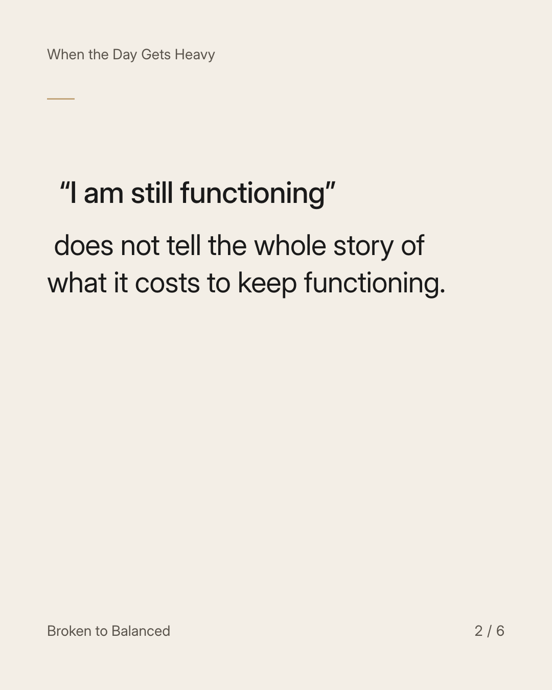
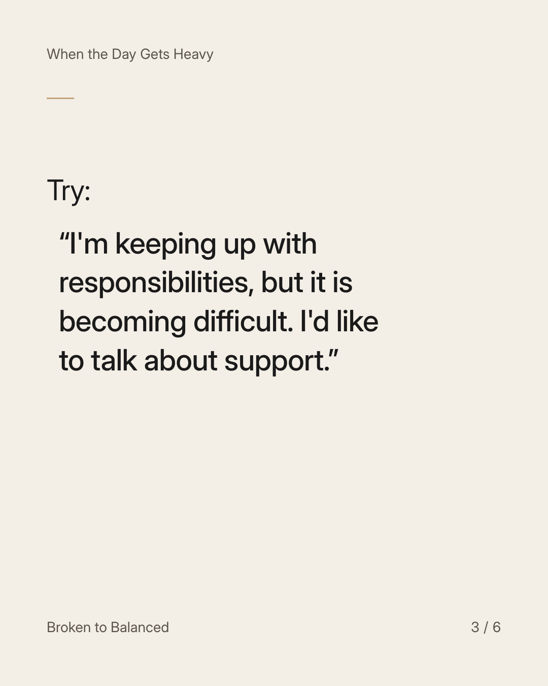
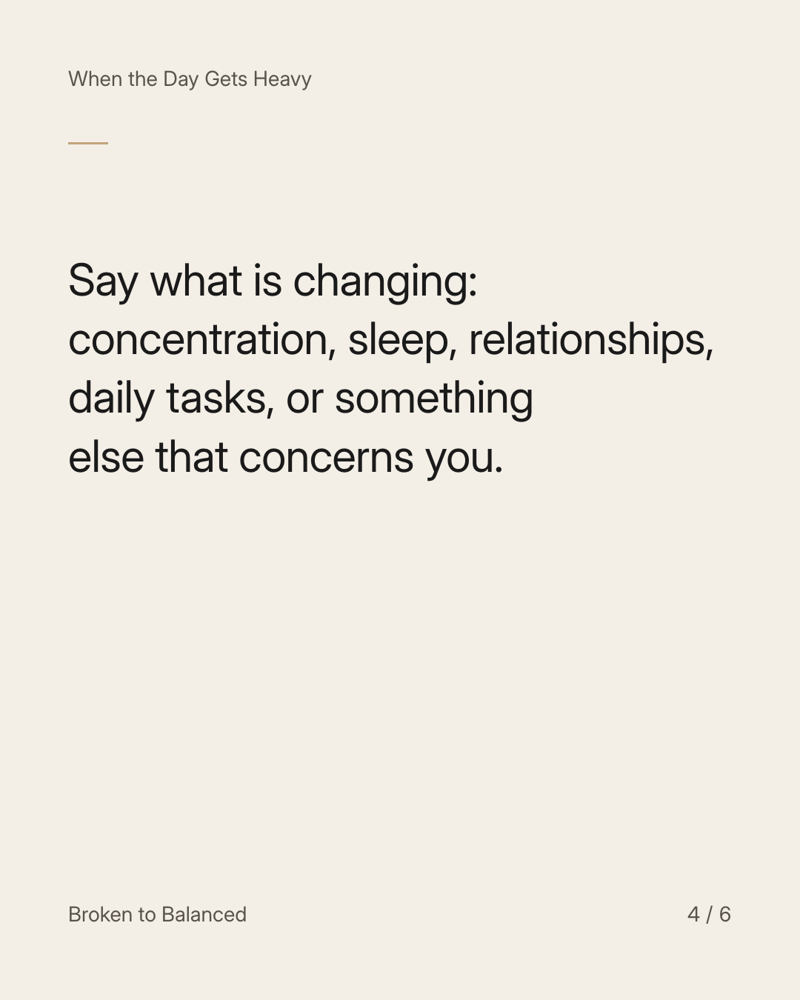
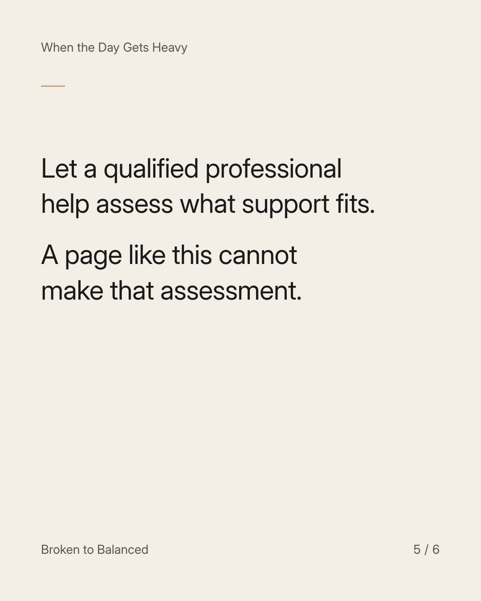
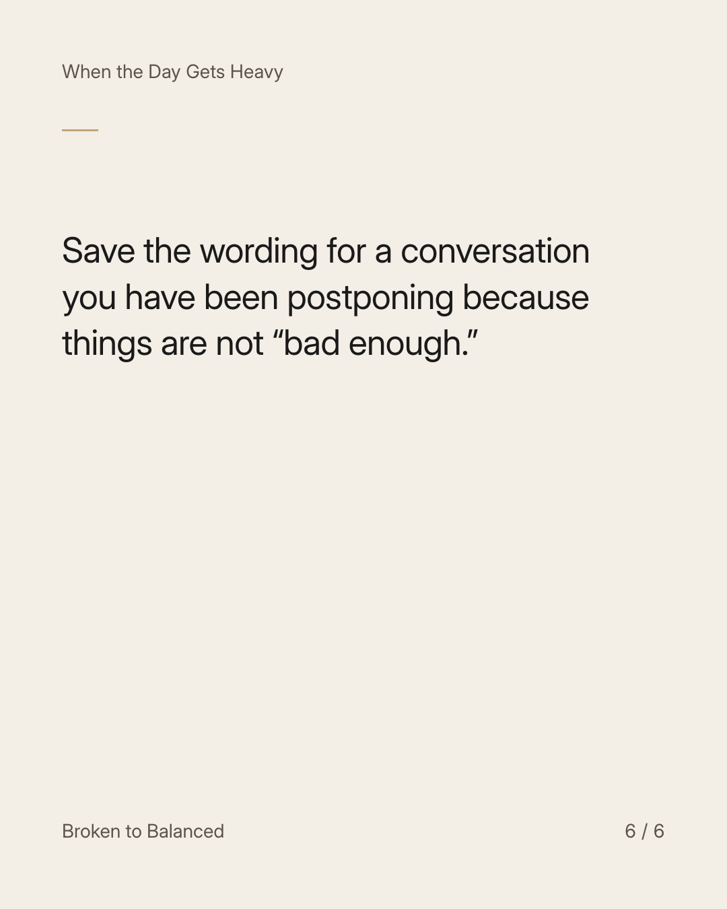

Exact text and accessibility text
You do not have to wait until things collapse to ask for help.
Slide 1 of 6. You do not have to wait until things collapse to ask for help.


Exact text and accessibility text
“I am still functioning” does not tell the whole story of what it costs to keep functioning.
Slide 2 of 6. “I am still functioning” does not tell the whole story of what it costs to keep functioning.


Exact text and accessibility text
Try: “I'm keeping up with responsibilities, but it is becoming difficult. I'd like to talk about support.”
Slide 3 of 6. Try: “I'm keeping up with responsibilities, but it is becoming difficult. I'd like to talk about support.”


Exact text and accessibility text
Say what is changing: concentration, sleep, relationships, daily tasks, or something else that concerns you.
Slide 4 of 6. Say what is changing: concentration, sleep, relationships, daily tasks, or something else that concerns you.


Exact text and accessibility text
Let a qualified professional help assess what support fits. A page like this cannot make that assessment.
Slide 5 of 6. Let a qualified professional help assess what support fits. A page like this cannot make that assessment.


Exact text and accessibility text
Save the wording for a conversation you have been postponing because things are not “bad enough.”
Slide 6 of 6. Save the wording for a conversation you have been postponing because things are not “bad enough.”
Exact caption
Plain-text fallback: select and copy the caption.